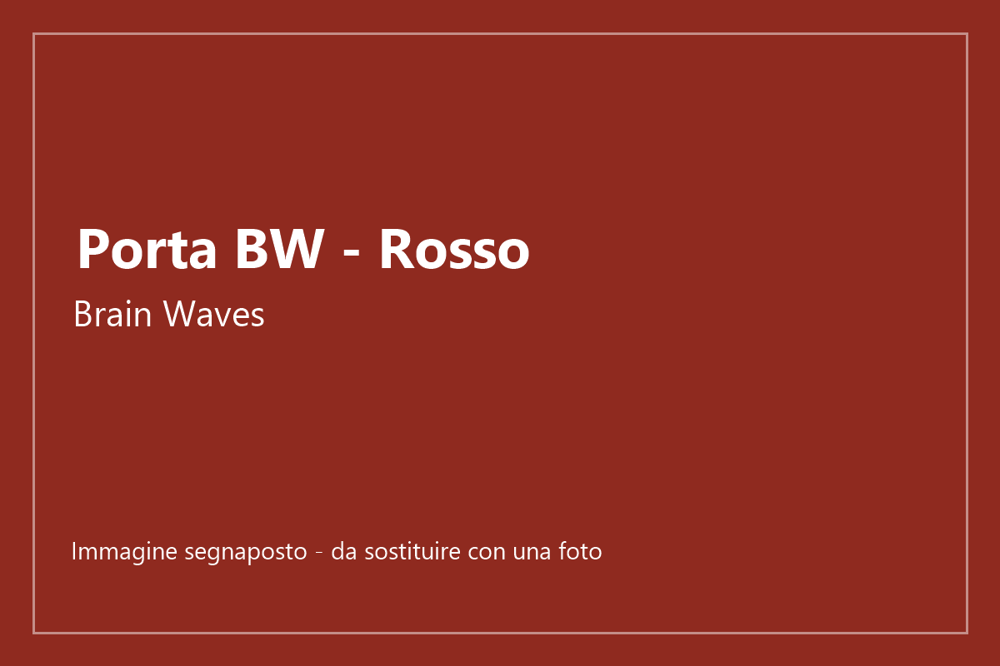

Dietro questa porta c'è Brain Waves, il laboratorio di Massimo Bertaccini, docente del modulo di crittografia del corso.
Massimo Bertaccini è un ricercatore e docente che si occupa di crittografia, sicurezza informatica e tecnologie per la protezione delle informazioni.
Con Brain Waves porta nella formazione un approccio che unisce ricerca, sperimentazione e applicazioni concrete.
La crittografia è una delle basi della cybersecurity: serve a rendere leggibili i dati solo per chi è autorizzato, proteggendo comunicazioni, password, transazioni e informazioni sensibili.
In questo spazio puoi scoprire come la matematica, la logica e la sicurezza informatica lavorano insieme per difendere il mondo digitale.

Ultimo aggiornamento: 13/11/2026